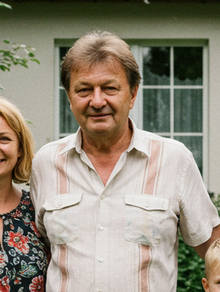

Militari in corsia
Ancora tumulti al Frantishku
Un'ondata di domande e qualche timore serpeggia tra i degenti e il personale dell'Ospedale Frantisek Memorial, nel cuore di Praga. Nelle prime ore dl giorno, numerosi pazienti hanno riferito di aver assistito a un movimento insolitamente copioso di personale militare all'interno della struttura, ben oltre la normale prassi o la presenza di forze dell'ordine per casi specifici. Secondo le testimonianze raccolte da alcuni pazienti, soldati in uniforme sarebbero stati visti transitare nei corridoi, in alcune aree riservate e persino nei pressi di sezioni solitamente accessibili solo al personale medico. "Ho visto almeno una decina di militari, alcuni armati, passare più volte davanti alla mia stanza. Non capisco cosa ci facciano qui," ha dichiarato un paziente, preferendo mantenere l'anonimato. "Sembrava ci fosse una specie di operazione in corso, ma nessuno ci ha detto nulla." Le fonti ufficiali dell'ospedale, interpellate in merito, non hanno rilasciato dichiarazioni immediate, limitandosi a un generico "non commentiamo questioni di sicurezza interna". Questo silenzio, unito all'intensificarsi della presenza militare nelle strade di Praga già segnalata nei giorni scorsi, alimenta l'incertezza e la curiosità tra i cittadini.
Cittadino Scomparso in Circostanze Misteriose: Aveva Filmato la Sparatoria del 4 Gennaio
Un nuovo, inquietante sviluppo si aggiunge al già torbido quadro della sparatoria avvenuta il 4 gennaio scorso in una strada a sud di Praga, in cui hanno perso la vita due individui le cui identità non sono ancora state rese note. Pavel Davil, 55 anni, titolare di una rivendita di ricambi per auto in strada Budejovicka, risulta misteriosamente scomparso dalla giornata di ieri. La famiglia di Davil ha denunciato la scomparsa alle autorità, manifestando forte preoccupazione. Secondo quanto emerso, Davil sarebbe stato uno dei testimoni oculari della violenta sparatoria e, cosa ancora più rilevante, avrebbe registrato l'intero evento con una telecamera amatoriale.
Il suo filmato era stato acquisito dalla polizia per le indagini e, al momento, le circostanze della sua scomparsa appaiono inspiegabili. Non ci sono segni di effrazione nella sua abitazione o nel suo negozio, e i familiari affermano che Davil non aveva dato alcun segnale di voler allontanarsi volontariamente. La polizia ha avviato le ricerche e sta indagando su ogni possibile pista, non escludendo un collegamento tra la scomparsa e quanto Pavel Davil potrebbe aver visto e registrato quella fatidica notte del 4 gennaio. L'episodio aggiunge un'ulteriore ombra di mistero sugli eventi violenti che hanno recentemente interessato la capitale.

La Santa Sede Vaticana esprime il suo plauso all'iniziativa di Padre Jonas
Grande eco ha suscitato l'iniziativa di Padre Jonas di tenere un toccante sermone che si terrà questa mattina presso la Chiesa del Santo Cuore di Gesù. La sua appassionata riflessione sul "maligno in agguato nella notte", ispirata anche dal recente, vile furto alla parrocchia, richiamerà probabilmente un'affluenza di fedeli cattolici tale da far prevedere una presenza superiore alla capienza della chiesa nelle prossime funzioni. La notizia del fervore comunitario ha raggiunto anche il Vaticano. La Santa Sede ha espresso il suo plauso per l'iniziativa di Padre Jonas, riconoscendo l'importanza del suo messaggio in questi tempi difficili. È stata comunicata l'intenzione di inviare una delegazione pontificia a Praga entro la prossima settimana per incontrarlo di persona, segno del significativo apprezzamento per il suo operato e la sua dedizione spirituale. L'evento sottolinea la vitalità della fede nella nostra capitale.